Префектура Аомори · Аомори · искусство
Художественный музей Аомори: белый дом над раскопом и собака Ёситомо Нары
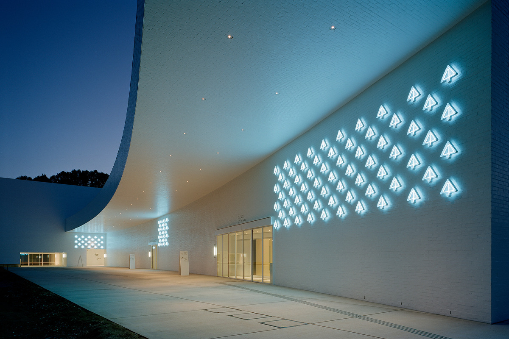
Белый простой объём Префектурального художественного музея Аомори стоит рядом с поселением эпохи Дзёмон и вырос из его раскопа. Внутри художники Аомори соседствуют с Шагалом, а во дворе сидит собака высотой больше восьми метров.
Музей
Искусство рядом с древним поселением
Префектуральный художественный музей Аомори открылся в 2006 году. Рядом с ним лежит Санная-Маруяма, раскопанное поселение эпохи Дзёмон, и это соседство определило многое: и облик здания, и сам замысел музея. Природа Аомори, местная художественная традиция и энергия древних людей, скрытая в земле Санная-Маруямы, здесь считаются источником творчества. Музей исследует, какие пейзажи и образы сформировали художников префектуры, и рассказывает о них миру.
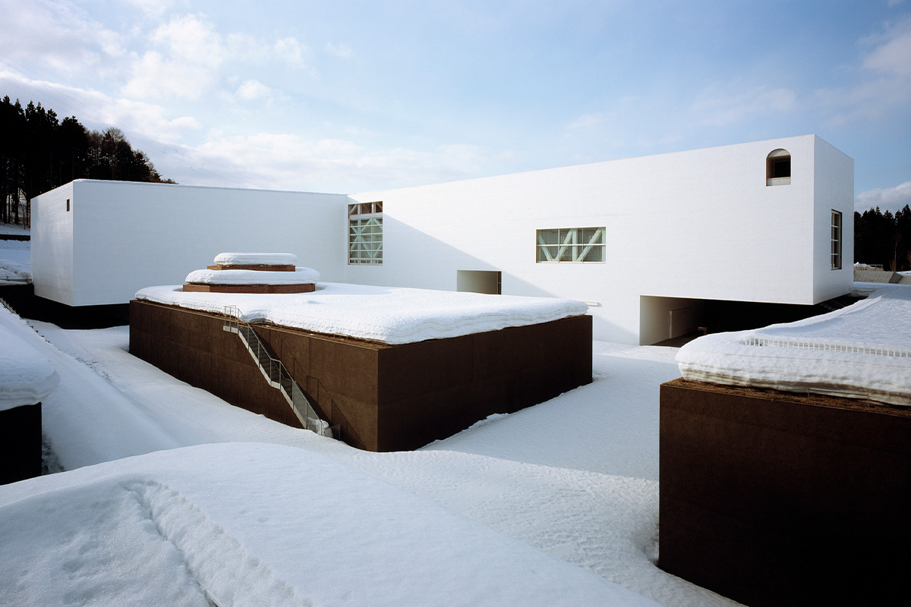
В собрании много работ художников из Аомори, но живописью и скульптурой музей не ограничивается: здесь показывают кино, ставят спектакли и устраивают концерты.
Фирменный стиль музея разработал графический дизайнер. Символ собран из иероглифа «дерево» и латинской буквы «a». Повторённый много раз, он превращается в узор, и синие деревья складываются в лес: так обыграно само название Аомори, «синий лес». Фирменные цвета взяты у природы: небесно-голубой, коричневый цвет земли и белый цвет снега. Для надписей и указателей нарисован собственный шрифт из прямых линий одной толщины, только горизонтальных, вертикальных и под углом 45 градусов.
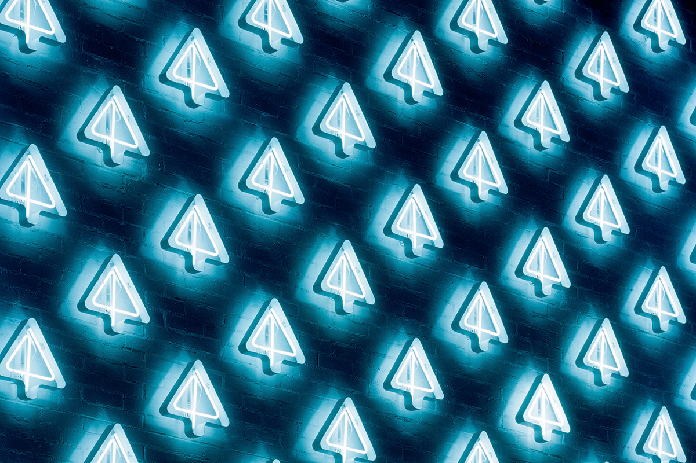
Неоновые символы на внешней стене и крупные угловатые буквы легко читаются и при этом сливаются с архитектурой и пейзажем. Это одна из черт, по которым музей узнают сразу.
Архитектура
Белые кубы над землёй
Здание построено по проекту Дзюна Аоки, победившего в архитектурном конкурсе. Аоки родился в 1956 году в префектуре Канагава, окончил архитектурный факультет Токийского университета, работал в мастерской Араты Исодзаки и в 1991 году открыл собственное бюро.
Идею он нашёл на соседнем раскопе Санная-Маруяма. Земля вокруг изрезана глубокими траншеями, как на месте раскопок, а сверху на неё опущены объёмы, обнесённые белой кирпичной стеной: снизу у них такие же выступы и впадины, сверху ровная крыша. Залы и хранилища устроены в промежутках между белыми объёмами и землёй.
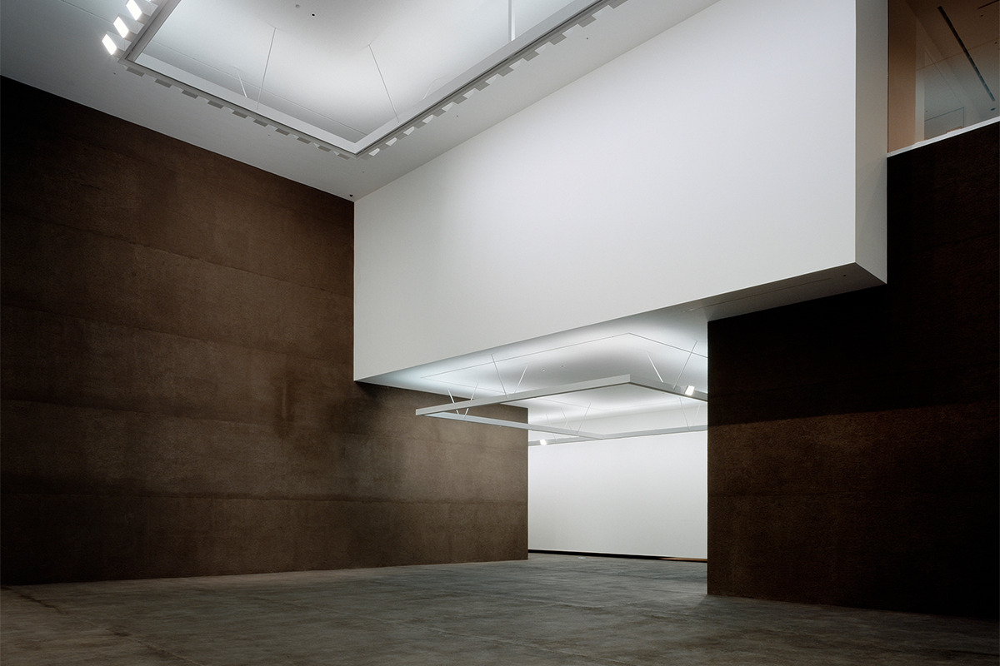
Так внутри возникают два типа пространства, которые спорят и уживаются друг с другом: стерильно белые залы и «земляные» комнаты с открытыми полом и стенами из грунта. В центре находится огромный зал «Алеко», и от него во все стороны расходятся большие, средние и маленькие галереи. Архитектор думал о городе, где дома разбегаются от центральной площади.
В залы на нижнем уровне спускаются на лифте, и по мере спуска свет в кабине медленно тускнеет.
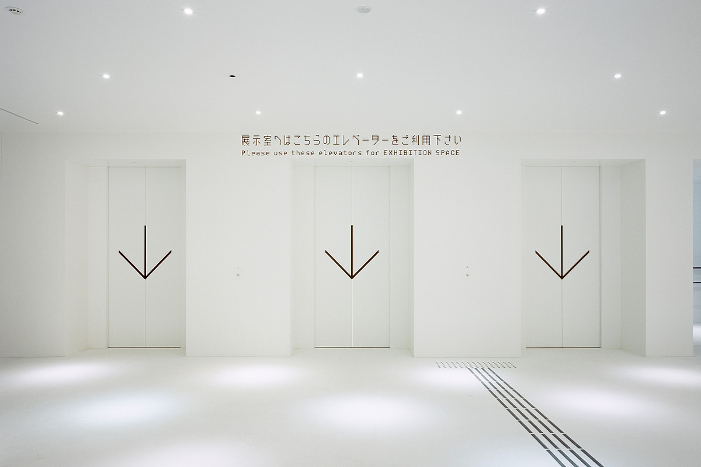
Шагал
Зал «Алеко»
Сердце музея, зал «Алеко», имеет 21 метр в длину и ширину и 19 метров в высоту, на все четыре этажа. Это крытая площадь внутри здания. Вокруг много разных помещений, и даже если заблудиться, площадь видна почти отовсюду, так что понять, где находишься, нетрудно. Впрочем, бродить по этому лабиринту без цели тоже часть удовольствия.
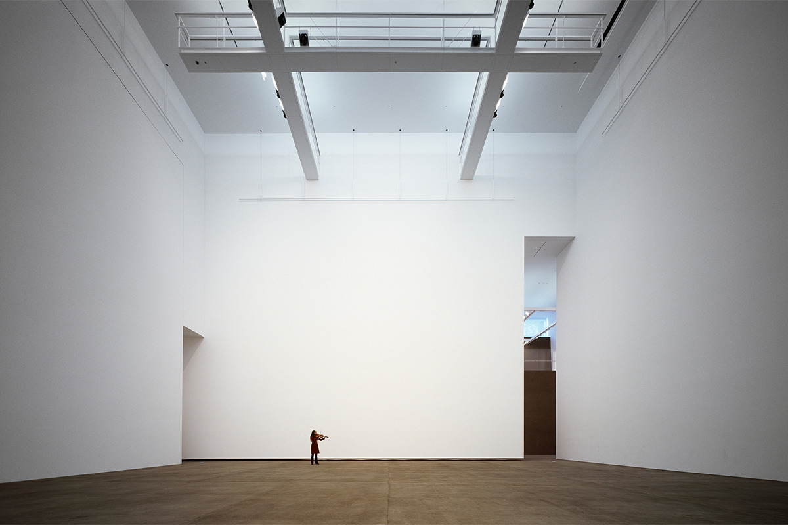
В зале выставлены декорации к балету «Алеко» работы Марка Шагала (1887–1985), одного из главных художников XX века, которого называют волшебником цвета. Он написал их в США, куда эмигрировал, спасаясь от преследований нацистов, по заказу труппы Ballet Theatre (ныне American Ballet Theatre). На огромных полотнах Шагал показывает себя в полную силу, и эти декорации считаются шедевром театрального искусства.
Художники
Собака, девочка из леса и гравюры Мунакаты
На открытой площадке нижнего уровня, в западной части здания, стоит «Аомори-кэн», «Собака Аомори»: огромная фигура высотой около 8,5 метра и шириной 6,7 метра. Её автор Ёситомо Нара родом из Хиросаки, он работает в Японии и за рубежом. Его персонажи с вызывающим взглядом и грустные собаки находят отклик у множества людей, живущих в сложном современном мире. Музей собирает работы Нары с 1998 года, и к 2022 году их было больше 170.
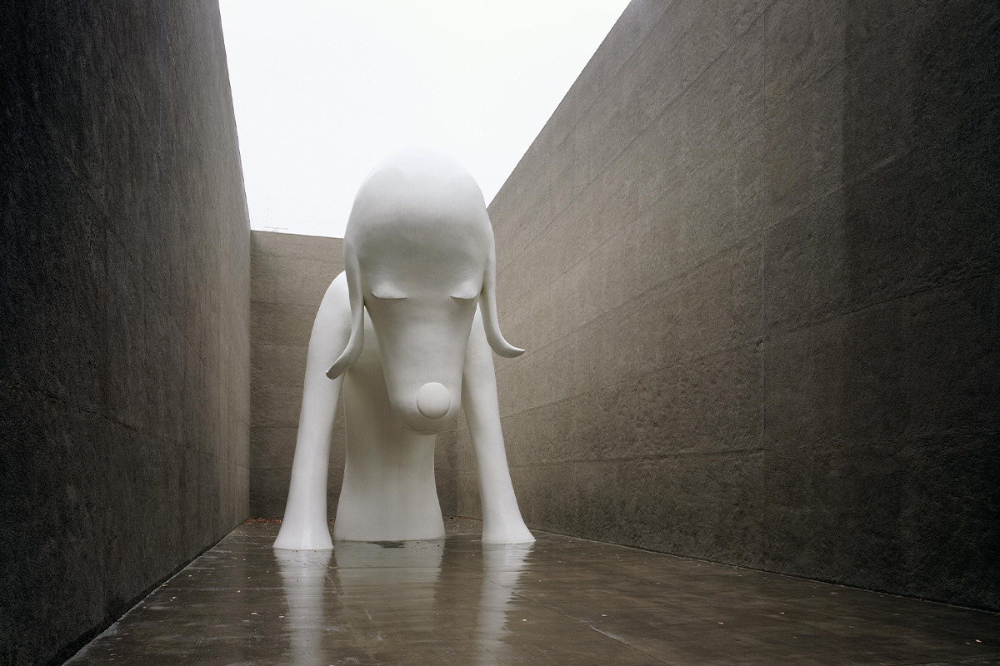
С каждым сезоном собака выглядит по-новому и, как большой Будда, словно обнимает каждого, кто на неё смотрит. Для многих она стала символом музея.
В южной части территории стоит ещё одна большая бронзовая работа Нары, «Miss Forest / Дитя леса» 2016 года. Её поместили в восьмиугольное кирпичное строение «Хаккакудо», сделанное по эскизу самого художника. Фигура сидит внутри так, будто была там всегда, и словно ведёт разговор со всем, что вокруг: с ветром, с пением птиц, а зимой со снегом.
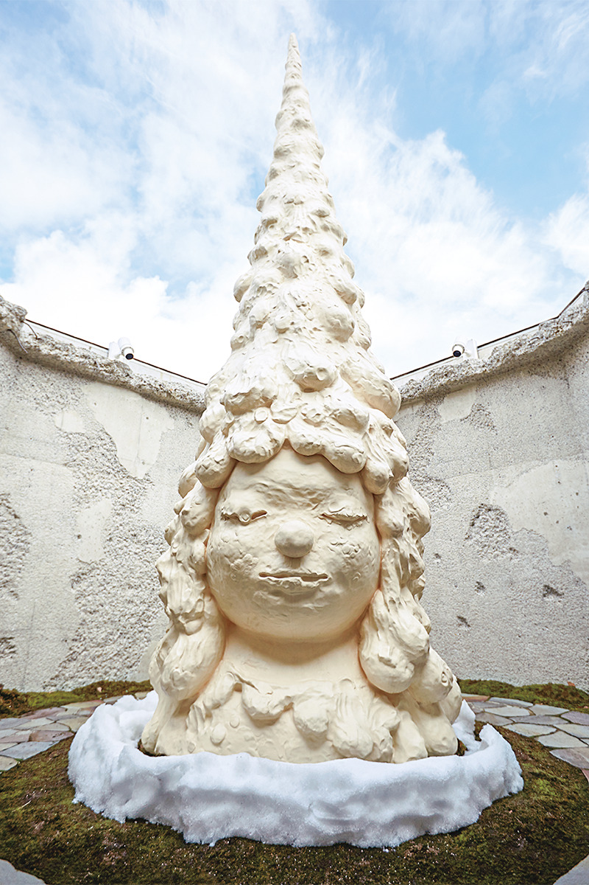
Сико Мунаката (1903–1975), уроженец города Аомори, прославился как мастер ксилографии. Свои гравюры он называл «ханга», но писал это слово иероглифом «доска», а не обычным иероглифом «печатная форма». Его работы показывают в отдельном зале Мунакаты, экспозицию меняют четыре раза в год.
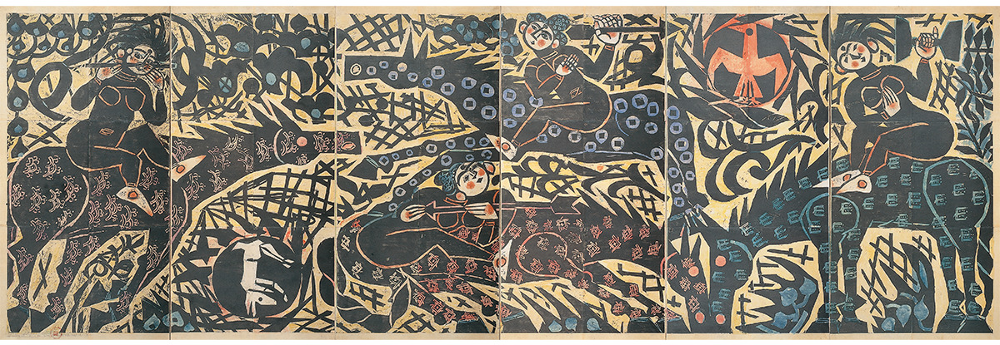
Отдых
Кафе, магазин и двор из земли
Из кафе «Четыре кошки» открывается вид на «Хаккакудо» с бронзовой работой Нары. В светлом просторном зале подают лёгкие блюда и сладости. Меню строится на местных продуктах, и особенно любят карри, долго томлённое с яблоками, и пилаф по-японски с говядиной из Аомори.
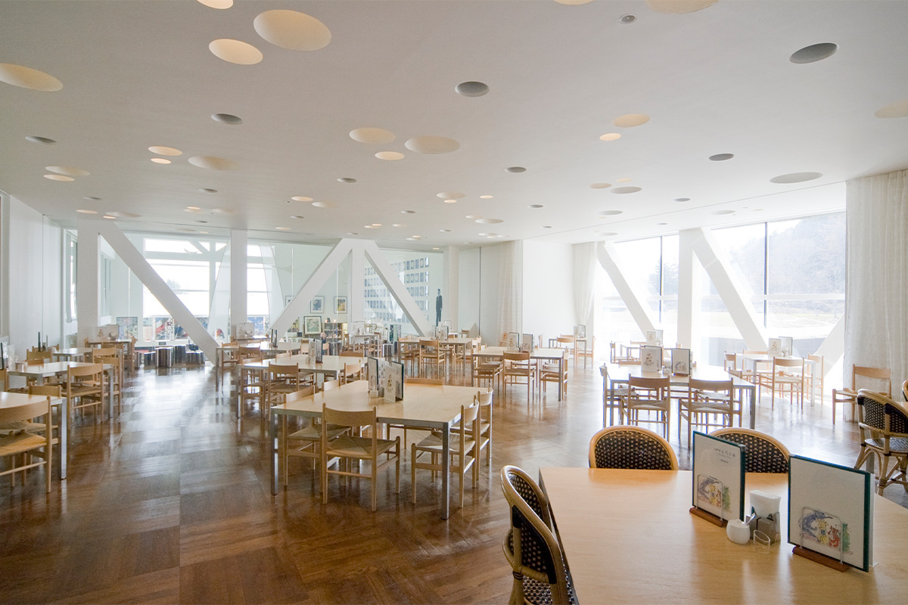
В музейном магазине продают открытки и канцелярию с мотивами коллекции, а также местные ремесленные изделия и сладости из фруктов Аомори, которые хорошо подходят для подарков.
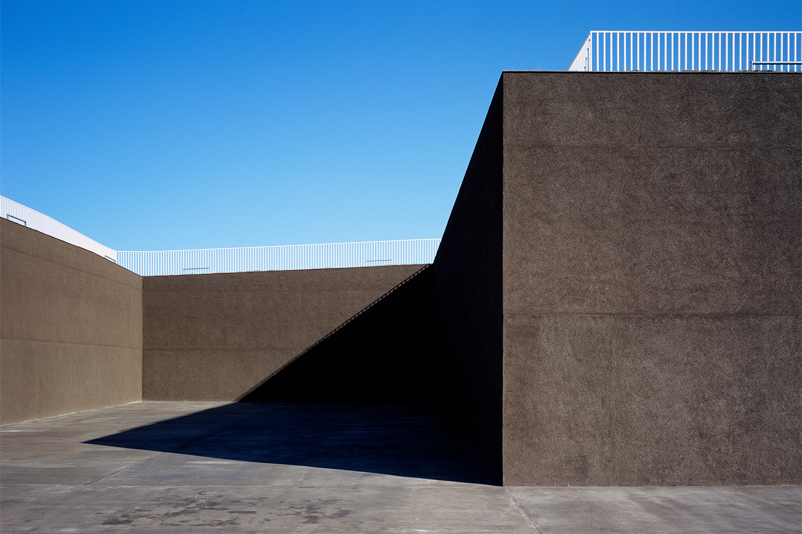
Сюда стоит приехать не только ради картин: в музее любуются архитектурой, ходят на спектакли, концерты и кино.
Префектуральный художественный музей Аомори
- Адрес
- префектура Аомори, Аомори, Ясуда, Тикано, 185
- Телефон
- +81 17-783-3000
- Часы работы
- 9:30–17:00 (вход до 16:30)
- Выходные
- второй и четвёртый понедельник месяца (если это праздник, то следующий день), новогодние праздники
- Цены / Вход
- коллекция (постоянная экспозиция) 510 иен для взрослых, 300 иен для студентов и старшеклассников, 100 иен для школьников младших и средних классов (2022); временные выставки оплачиваются отдельно
- Сайт
- aomori-museum.jp
Фото: Даити Ано, Юки Морисима.